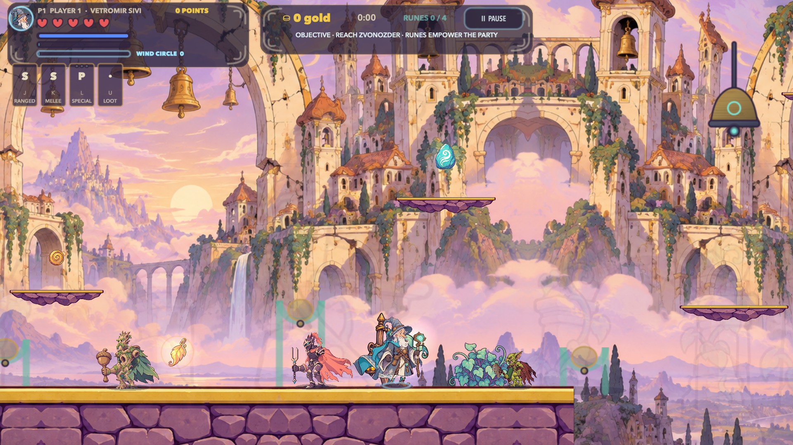
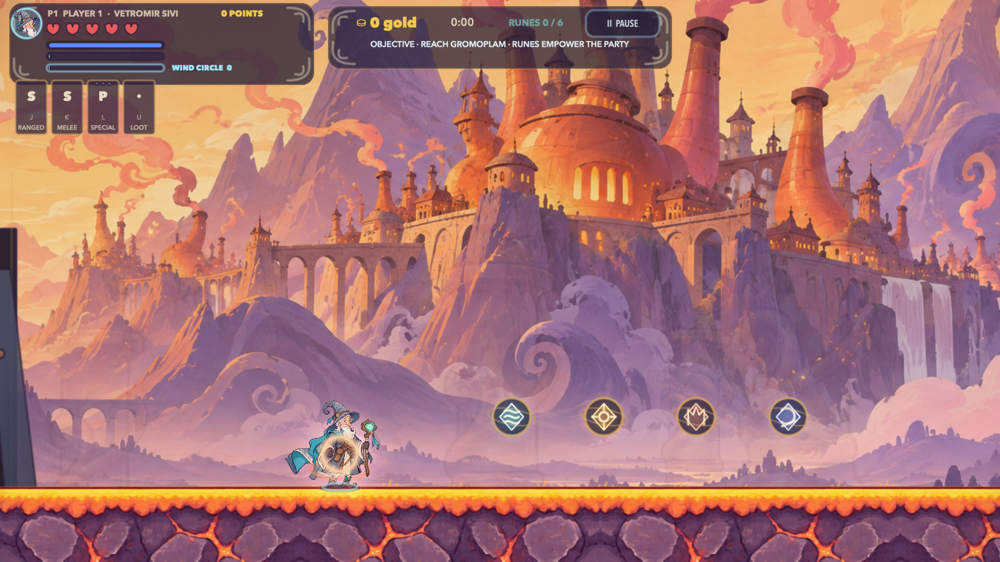
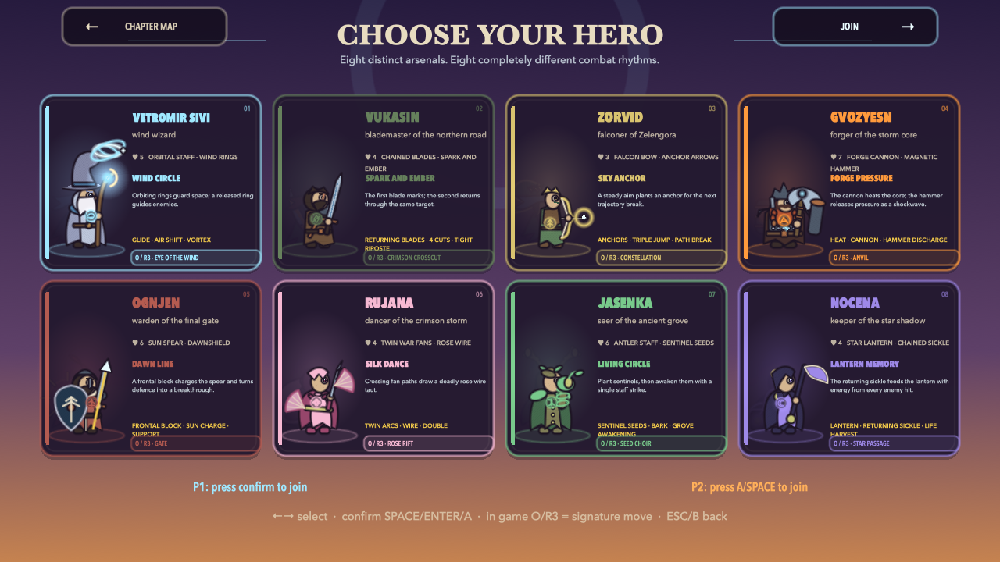
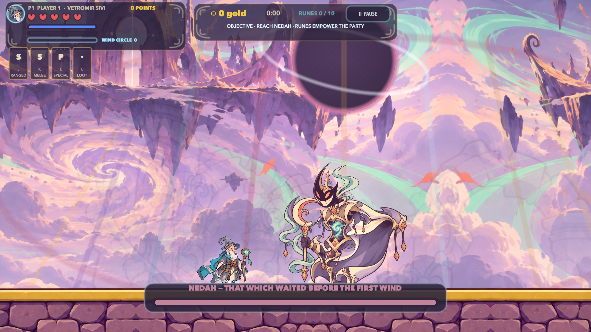

{kind=link}
Three powers, eight styles
Ranged, melee and a unique special for every hero. Plant mines, link anchors, recall a sabre or stretch a cutting thread. Slot four holds attacks found during the run.
Mrakovina has lost its wind. Choose one of eight heroes, cross ten full adventures and open the path to NEDAH, guardian of the Zero Sky.
Captured in version 7.25. Open the image to see it at full size.
This is more than running and shooting. Every hero changes the rhythm, every world introduces a rule and every guardian demands a new answer.
Ranged, melee and a unique special for every hero. Plant mines, link anchors, recall a sabre or stretch a cutting thread. Slot four holds attacks found during the run.
Variable jumps, coyote time, buffering, wall slides, long jumps, gliding and aerial strikes form one connected system.
Ten full chapters unlock the Zero Sky, NEDAH's five phases and a complete epilogue.
Play solo or add a second player. Keyboard, mouse and controller bindings are remappable.
Equipment, hidden runes and temporary field powers alter weapons, size, protection and routes.
Earn points through combat, exploration and completion. Profiles and scores stay on your Mac.
Platforms, vertical routes, hazards, combat arenas and enemy tactics evolve across the journey.
The first world introduces precise movement, vertical routes and enemies that protect space instead of blindly charging.
Sky islands, frozen climbs, root halls, storm gates and echo-less cities demand different movement and a different arsenal.


Heroes return blades, place anchors, wake sentinel seeds, close space or guard allies. Three permanent powers cover ranged, melee and special attacks; collected loot adds a fourth option.
No choice is merely a different costume. Each hero has a personal weapon, resource, movement model, defence and finishing move.


Five forms, the combined strength of every previous guardian and an arena that transforms during battle. Victory unlocks the final epilogue.
The new 7.25 release includes English and Serbian in one app, as a DMG or ZIP. For Apple Silicon Macs running macOS 13 Ventura or newer.
Choose the DMG for the easiest installation or the ZIP as a fallback. Both languages are inside the same app.
Version 7.25 · Apple Silicon · English + SerbianDownload freeCurrent Full HD screenshots, the arsenal guide, release facts and social copy in English and Serbian.
Screenshots · arsenal · copy · tested scopeDownload the press kitThe complete 7.25 release is free on public GitHub. There are no subscriptions, ads, in-game purchases or time limits. itch.io still hosts an earlier release and companion material.
Apple Silicon models with an M1, M2, M3, M4 or newer chip and macOS 13 Ventura or newer. Intel Macs, Windows, Linux, iPhone and Android are not supported.
Yes. Vetromir supports one or two local players. Keyboard, mouse and compatible controller bindings can be changed in the menu.
Yes. Version 7.25 contains English and Serbian in the same app, and language can be changed from the menu.
The app is ad-hoc signed but not Apple-notarized. Right-click the app and choose Open, or use Privacy & Security → Open Anyway for the first launch.
No. There are no accounts, analytics, telemetry or network services. Profiles, equipment and scores remain on the local computer.
Ten adventures, the Zero Sky, eight arsenals and four attacks to find on the journey. Free, in both languages.
{kind=link}
{kind=link}
{kind=link}